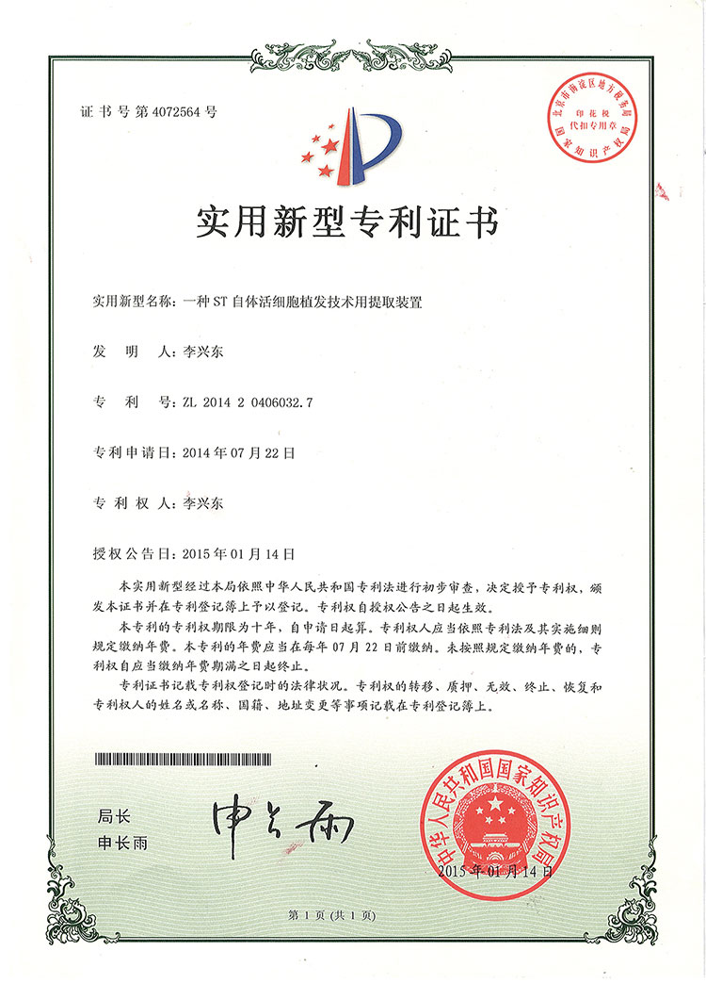
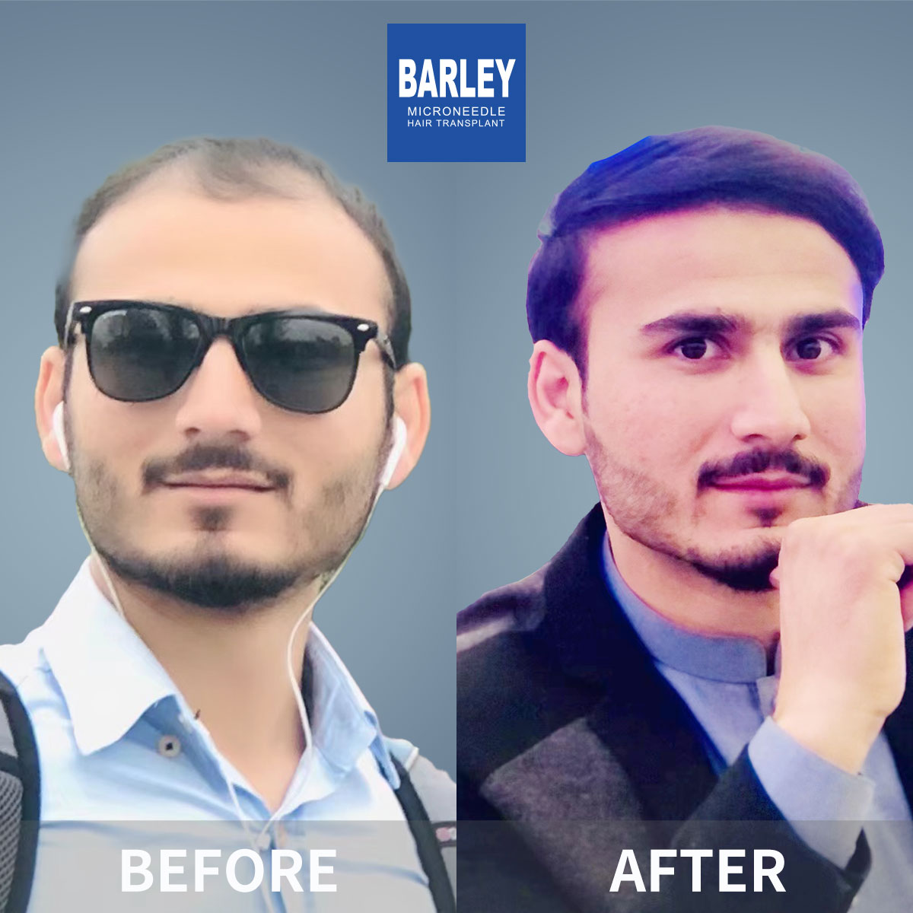

Barley's patented microneedle implanter pen technology delivers ultra-natural results with minimal trauma, fast recovery, and excellent density.
The next generation of hair restoration technology
Our patented microneedle implanter pen directly implants follicles with precision, eliminating the need for creating recipient channels first.
Complete control over hair direction, depth, and angle during implantation for highly natural-looking hairlines and distribution.
Minimal trauma to the scalp means faster healing, less discomfort, and you can return to your normal routine in just a few days.
The next generation of hair restoration technology
Traditional hair transplant methods use blades or needles to create recipient channels before implanting grafts. This two-step process can cause more trauma, less control over hair direction, and longer recovery times.
Barley's microneedle hair transplant advances this process with our patented implanter pen technology. The microneedle pen simultaneously creates the channel and implants the follicle in a single, precise motion.
This advanced technique allows us to achieve higher density, more natural hair direction, and significantly less trauma to the scalp. The tiny needle size (0.6-0.8mm) means minimal scarring and faster healing.

How our advanced microneedle hair transplant works
Our expert doctor evaluates your hair loss and designs a personalized hair transplant plan tailored to your goals and facial features.
Healthy follicles are carefully extracted from the donor area using FUE or FUT method, depending on your specific needs.
Extracted grafts are carefully sorted and prepared under magnification to ensure maximum viability and quality.
Using our patented implanter pen, grafts are precisely implanted at the ideal angle, depth, and direction for natural results.
The next generation of hair restoration technology
Barley Microneedle Hair Transplant Hospital is an innovator in microneedle hair transplant technology. We hold multiple patents for our implanter pen devices and implantation techniques.
Our commitment to innovation and quality has made us a professional in the hair restoration industry. With 25+ years of clinical experience and over 200,000 successful procedures, we have refined the art and science of hair transplantation.
Every Barley microneedle procedure is performed by an experienced doctor with specialized training in our proprietary techniques. We never use untrained technicians for critical implantation steps.

See how microneedle compares to traditional methods
| Feature | Traditional FUE | Traditional FUT | Barley Microneedle |
|---|---|---|---|
| Implantation Method | Forceps + channel | Forceps + channel | Implanter pen |
| Needle Size | 1.0-1.5mm | 1.0-1.5mm | 0.6-0.8mm |
| Direction Control | Limited | Limited | Precise 360° |
| Trauma to Scalp | Moderate | Higher | Minimal |
| Recovery Time | 1-2 weeks | 2-4 weeks | 3-5 days |
| Graft Survival Rate | 85-90% | 85-90% | 95%+ |
| Naturalness of Results | Good | Good | Excellent |
Discover the advantages of our advanced technology
Precise control over angle and direction creates hairlines that look highly natural and undetectable.
Minimal trauma means you can return to work and normal activities in just 3-5 days.
Smaller implantation points allow closer graft placement for fuller, denser results.
Gentle handling and single-step implantation maximize follicle viability and survival.
Ultra-fine 0.6-0.8mm needles leave tiny, virtually undetectable marks that heal quickly.
Barley holds multiple patents for microneedle implanter devices and techniques.
Every implantation is performed by an experienced, trained doctor - never technicians.
Local anesthesia and minimally invasive technique make the procedure comfortable.
Real patients, real microneedle results



Hear from our satisfied microneedle hair transplant patients
"I researched hair transplants for years and chose Barley because of their microneedle technology. The results are absolutely excellent - my hairline looks completely natural and I recovered in less than a week. The doctors and staff were highly professional throughout the entire process."
"The microneedle procedure was so much easier than I expected. I was back at work in 4 days and no one even noticed. Now 8 months later, my hair looks excellent. The hairline is ideal - totally natural. I couldn't be happier with my decision to go with Barley."
"I had a hair transplant at another clinic years ago and it looked plugged and unnatural. Barley's microneedle technique fixed it and now my hair looks completely natural. The difference in technology and skill is night and day. Highly recommend Barley to anyone considering a transplant."
Everything you need to know about microneedle hair transplant at Barley
Microneedle hair transplant costs at Barley typically range from $4,000 to $18,000 USD, depending on the number of grafts needed. The advanced technology may cost slightly more than traditional FUE, but offers higher density and better results. Average cost is $6,000-$10,000 for most patients.
Microneedle hair transplant uses patented implanter pens with ultra-fine needles to implant hair follicles with precision. This technology allows for smaller incisions, better angle control, and higher density compared to traditional forceps implantation. Barley holds 14 national patents for this technology.
Recovery is faster than traditional methods due to smaller incisions. Most patients return to normal activities within 2-3 days. Initial healing takes 5-7 days, with transplanted hair shedding after 2-4 weeks. New growth begins at 3-4 months, with full results visible at 12-18 months.
Microneedle technology offers several advantages over traditional FUE: smaller incisions (less scarring), higher density implantation, better angle control, and faster healing. The graft survival rate is also higher. However, it requires specialized training and equipment, which is why Barley's 14 patents and extensive experience make a difference.
With microneedle technology, we can transplant up to 3,000-4,000 grafts in a single session, depending on the patient's donor supply and the area to be covered. The procedure typically takes 6-8 hours. For extensive baldness, multiple sessions may be recommended.
Yes, results are long-lasting. The transplanted hair follicles are taken from the DHT-resistant donor area. Once implanted using microneedle technology, these follicles will continue to grow naturally for life, with the added benefit of higher density and more natural appearance.
Schedule a free consultation to discover if microneedle hair transplant is right for you
Everyone's hair loss journey and solution are unique due to a variety of factors. Our hair restoration experts will assist you in determining the root cause and the great solution for your hair restoration plan. If you have any questions, please ask; we are happy to assist.
+86 18618396621


hanying@damaizf.com